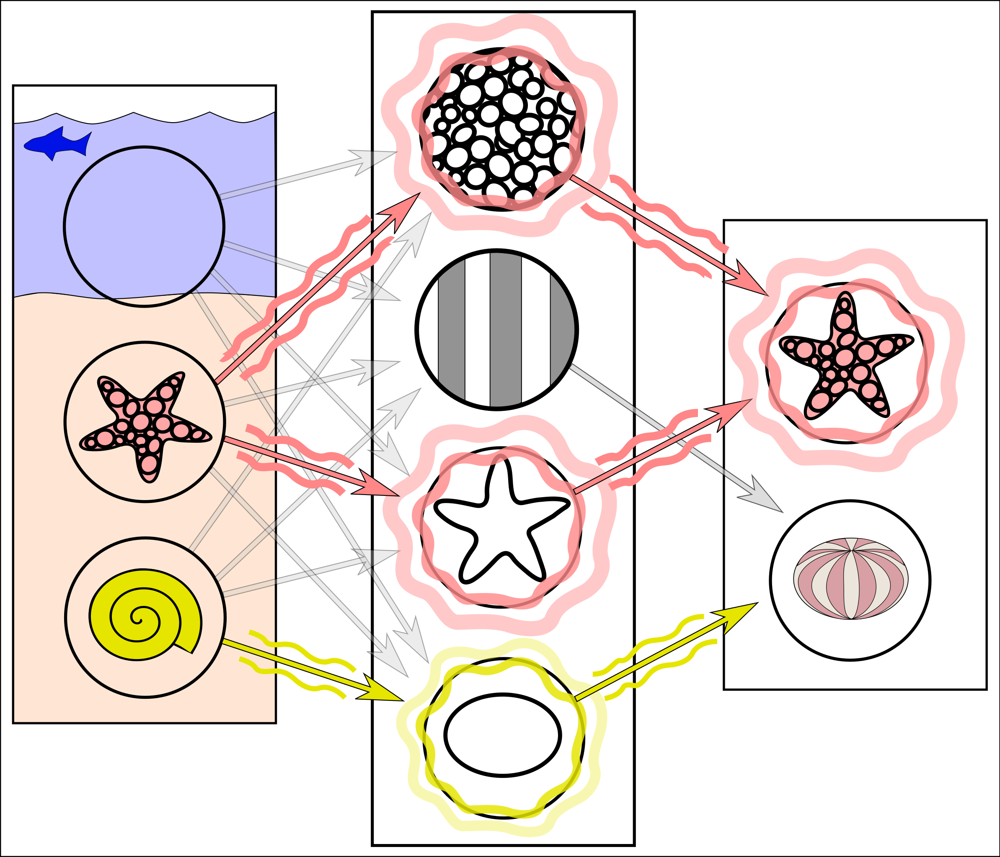
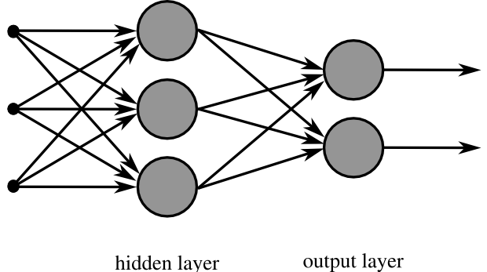

類神經網路運作原理
類神經網路（Artificial Neural Network, ANN），又稱人工神經網路，本質上是一種數學演算法與模型。它模仿生物神經網路的結構來運作，但與真實的人類大腦並不相同。
它最主要的目的是用來計算未來事件發生的機率。作法是根據大量的過去資料，找出隱藏在資料中的規律，進而對新輸入的資料給出預測。常見應用包含圖片分類、語音辨識、文字生成、股價趨勢預測與異常偵測。
類神經網路在做什麼
可以先把類神經網路想成一個多層的計算系統：
- 把輸入資料轉成數字。
- 讓數字經過一層又一層的加權計算。
- 逐步抽取特徵。
- 最後輸出分類結果、機率或預測值。
輸入層 隱藏層 輸出層
x1 ──┐
├──→ [神經元] ──┐
x2 ──┤ ├──→ [神經元] ──→ 預測值
├──→ [神經元] ──┘
x3 ──┘

基本組成
類神經網路由三個核心元素組成，在示意圖中有直觀的視覺對應：
（圈圈） （箭頭） （圈圈）
訊號強度 A ───[權重 W]───→ 訊號強度 A ───[權重 W]───→ 輸出機率
1. 訊號強度（A）
在網路圖中以「圈圈」表示。所有輸入資料必須先轉換成帶有小數點的浮點數，這些數字代表訊號的強度。例如：
- 文字會轉成詞向量或 token ID。
- 圖片會轉成像素矩陣（0.0 ～ 1.0）。
- 聲音會轉成波形或頻譜特徵。
- 財經資料會轉成價格、成交量、技術指標等數字。
2. 權重（W）
在網路圖中以「箭頭」表示，代表訊號的放大倍數。訊號通過箭頭時會乘上對應的權重，例如放大一倍、兩倍，或縮小。
我們常聽到的「模型參數」，指的就是這些權重。例如 Llama 3 號稱有 4000 億個參數，代表它的網路裡有 4000 億條箭頭與對應的權重值。
神經元的計算公式：
輸出 = 激活函數(輸入1 × 權重1 + 輸入2 × 權重2 + 偏差)
(A1) ──[W1]──┐
├──→ Σ(Ai·Wi) + b ──→ f(z) ──→ (輸出 A)
(A2) ──[W2]──┘
A = 訊號強度 W = 權重（放大倍數） b = 偏差 f = 激活函數
3. 偏差（Bias）
偏差用來調整整體輸出的基準點，讓模型不必永遠從零開始判斷。
4. 激活函數
激活函數（Activation Function）負責引入非線性，讓模型可以處理更複雜的模式。常見例子有 ReLU、Sigmoid、Tanh。
ReLU：f(z) = max(0, z) Sigmoid：f(z) = 1 / (1 + e^-z)
輸出 輸出
│ ╱ 1 │ ╭───────
│ ╱ │ ╭─╯
│ ╱ 0.5│───╯
│╱ │ ╭╯
───┼──────── z │╭╯
│ (負值全部變 0) 0 ┼──────────── z
(壓縮到 0~1，常用於輸出層機率)
Tanh：f(z) = (e^z - e^-z) / (e^z + e^-z)
輸出
1 │ ╭───────
│ ╭─╯
0 ┼───╯──────── z
│ ╯
-1 │╭──────
(壓縮到 -1~1，中心對稱)
網路結構怎麼看
一個典型的類神經網路通常包含三種層：
| 層級 | 作用 | 例子 |
|---|---|---|
| 輸入層 | 接收原始資料 | 像素、數值特徵、詞向量 |
| 隱藏層 | 逐層抽取特徵與組合訊息 | 邊緣、形狀、語意、趨勢 |
| 輸出層 | 產生最終結果 | 類別機率、分數、回歸值 |
輸入層 隱藏層 1 隱藏層 2 輸出層
(3 個節點) (4 個節點) (4 個節點) (2 個節點)
( x1 ) ─── ( h11 ) ─── ( h21 )
╲ ( h12 ) ─── ( h22 ) ─── ( y1：貓 )
( x2 ) ─── ( h13 ) ─── ( h23 )
╱ ( h14 ) ─── ( h24 ) ─── ( y2：狗 )
( x3 ) ───
→ 每條連線都有對應的權重 w
→ 每個節點都有偏差 b 和激活函數 f

兩個核心階段
訓練階段
訓練的核心目的是計算出模型中所有未知的權重（W）。
作法是輸入大量的「舊數據」。因為事情已經發生，這些數據的輸出結果是「已知」的。由於類神經網路沒有可以直接套用的數學公式解，因此必須透過電腦採用暴力破解法（Try and Error 試誤法），反覆猜測權重：先假設一組權重，算錯了就加減一點再重算，直到找出最合理的權重組合。
這也是為什麼訓練 AI 往往需要幾萬顆處理器連續運算數十天的原因。
訓練流程通常如下：
- 將大量歷史資料輸入模型。
- 模型先產生預測結果。
- 用損失函數比較「預測值」與「正確答案」的差距。
- 透過反向傳播（Backpropagation）計算每個權重要往哪個方向調整。
- 用最佳化方法（例如 Gradient Descent 或 Adam）更新權重。
- 重複很多次，直到模型逐漸學到規律。
┌─────────────────────────────────────────────────────┐
│ 訓練迴圈（每個 epoch） │
│ │
│ 訓練資料 │
│ │ │
│ ▼ │
│ 【前向傳播】 輸入 → 隱藏層計算 → 輸出預測值 │
│ │ │
│ ▼ │
│ 【計算損失】 Loss = f(預測值, 正確答案) │
│ │ │
│ ▼ │
│ 【反向傳播】 計算每個權重的梯度 ∂Loss/∂w │
│ │ │
│ ▼ │
│ 【更新權重】 w = w - lr × 梯度 (Gradient Descent) │
│ │ │
│ └──────────────────────────────┐ │
│ ▼ │
│ 重複直到收斂 │
└─────────────────────────────────────────────────────┘
訓練不是單純的暴力嘗試，而是透過數學方法沿著讓誤差下降的方向調整參數。
損失曲線：隨著訓練進行，Loss 應該逐漸下降並趨於平穩：
Loss
│
1.0│ ╲
│ ╲
0.6│ ╲──
│ ╲──
0.3│ ╲────
│ ╲─────────────
0.1│ ─────────
└──────────────────────────────────────── epoch
1 10 20 30 50 100
推論階段
當成千上億個權重（W）都確定下來後，訓練就結束了，模型即可進入推論階段。
此時模型的權重公式已經固定（已知）。使用者只需把最新的資料轉換成浮點數輸入進去，模型就能瞬間透過算好的公式，推論並預測出結果（機率）。因為不需要再像訓練時那樣慢慢猜測參數，推論的計算速度會快上許多。
- 輸入新的資料（轉成浮點數）。
- 使用已經固定的權重進行前向傳播。
- 輸出層產生機率，代表各個事件發生的可能性。
最新資料（浮點數）
│
▼
輸入層 ──→ 隱藏層（權重已固定，不再更新） ──→ 輸出層
│
▼
預測機率
例：漲 72% 跌 28%
推論通常比訓練快上許多，因為它只需要做一次前向計算，不需要反向傳播或更新參數。
一個簡單例子
假設要判斷一封電子郵件是不是垃圾郵件，模型可能會看這些特徵：
- 是否包含大量促銷字詞
- 是否有可疑連結
- 寄件者是否陌生
- 內容格式是否異常
模型會把這些特徵轉成數值，經過隱藏層計算後，在輸出層給出一個結果，例如：
輸入特徵 隱藏層 輸出
促銷字詞: 1.0 ──┐
可疑連結: 1.0 ──┼──→ [計算與抽取特徵] ──→ 垃圾郵件: 0.92
陌生寄件: 0.8 ──┤ ──→ 正常郵件: 0.08
格式異常: 0.6 ──┘
是垃圾郵件的機率：0.92
不是垃圾郵件的機率：0.08
這代表模型判定它高度可能是垃圾郵件。
過擬合與欠擬合
訓練好的模型不一定能在新資料上表現好，常見的兩個問題：
欠擬合（Underfitting） 剛好合適 過擬合（Overfitting）
模型太簡單，連訓練資料都 訓練與驗證 Loss 都低， 模型記住訓練資料的雜訊，
學不好 泛化能力強 在新資料上表現差
Loss Loss Loss
│ ────────── │ ╲ │ ╲
│ │ ╲── │ ╲── 驗證集 ↗
│ 訓練集 ≈ 驗證集 │ ╲──── │ ─────╱
│ 都很高 │ ───── │ 訓練集繼續下降
└─────── epoch └────────── epoch └──────────── epoch
解法：增加模型複雜度 理想狀態 解法：Dropout、正則化、
或更多特徵 Early Stopping、更多資料
| 問題 | 訓練集 Loss | 驗證集 Loss | 解法 |
|---|---|---|---|
| 欠擬合 | 高 | 高 | 加深/加寬網路、增加特徵 |
| 正常 | 低 | 低 | — |
| 過擬合 | 低 | 高 | Dropout、正則化、Early Stop |
為什麼需要很多資料與算力
如果模型很大，參數數量就會很多。參數越多，模型理論上能表達的模式越複雜，但同時也代表：
- 需要更多資料避免學歪
- 需要更長時間訓練
- 需要更多 GPU 或其他運算資源
這也是大型語言模型訓練成本很高的主要原因之一。
常見網路類型
類神經網路有很多變體，針對不同資料型態設計：
全連接網路 (MLP / DNN) 卷積神經網路 (CNN)
───────────────────── ────────────────────────
每個節點連到下一層全部節點 卷積核在圖片上滑動，提取局部特徵
輸入 ─ 全連接 ─ 全連接 ─ 輸出 圖片輸入
┌──────┐
│ 卷積 │─→ 特徵圖 ─→ 池化 ─→ 全連接 ─→ 分類
└──────┘
適合：表格資料、特徵工程後的資料 適合：圖片、空間資料
─────────────────────────────────────────────────────────
遞歸神經網路 (RNN/LSTM) Transformer
───────────────────── ────────────────────────
有「記憶」，處理序列資料 用注意力機制處理長距離依賴
x1 → [RNN] → h1 Token1 ─┐
x2 → [RNN] → h2 Token2 ─┤─→ 自注意力 ─→ 輸出
x3 → [RNN] → h3 Token3 ─┘
↑ ↑
前一步的隱藏狀態會傳到下一步 適合：語言、長文本、NLP 任務
適合：時間序列、語音、文字序列
| 類型 | 強項 | 典型應用 |
|---|---|---|
| MLP | 表格資料 | 分類、回歸、推薦 |
| CNN | 空間特徵 | 圖片分類、物件偵測 |
| RNN / LSTM | 序列資料 | 語音辨識、時間序列預測 |
| Transformer | 長距離依賴 | GPT、BERT、翻譯、摘要 |
常見誤解
類神經網路不是在模擬真正的大腦
它只是借用了「神經元連接」這個概念，並不等同於人類神經系統。
類神經網路不一定只輸出機率
有些任務輸出的是機率分布，有些任務輸出的是數值、向量、文字或圖片。
模型不是理解世界，而是學到資料中的統計規律
它表現得像「懂了」，但底層仍然是參數化的數學映射。
訓練 vs 推論：一眼看清差異
┌──────────────┬──────────────────────────────┬──────────────────────────────┐
│ │ 訓練（Training） │ 推論（Inference） │
├──────────────┼──────────────────────────────┼──────────────────────────────┤
│ 輸入 │ 大量歷史資料（答案已知） │ 最新資料（答案未知） │
│ 權重 W │ 未知 → 透過試誤法求解 │ 已知（固定不動） │
│ 計算方向 │ 前向 + 反向傳播 │ 只有前向傳播 │
│ 計算量 │ 龐大（需數萬 GPU × 數十天） │ 輕量（毫秒級回應） │
│ 目的 │ 找出最佳權重組合 │ 用固定公式預測機率 │
└──────────────┴──────────────────────────────┴──────────────────────────────┘
一句話總結
類神經網路是一種把輸入資料轉成浮點數，透過多層加權計算（圈圈與箭頭）學習規律，最終輸出事件發生機率的數學模型。訓練負責找出所有未知的權重，推論則用固定的權重快速預測。
圖片來源
images/simplified-neural-network-example.png：Wikimedia Commonsimages/multilayer-neural-network.png：Wikimedia Commons